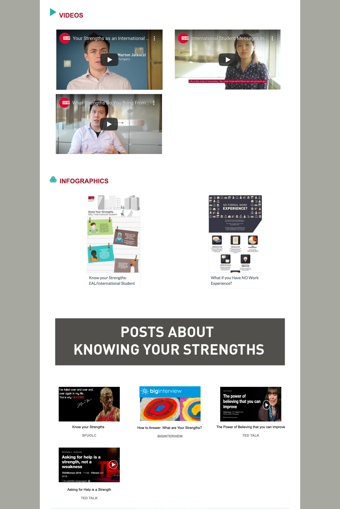
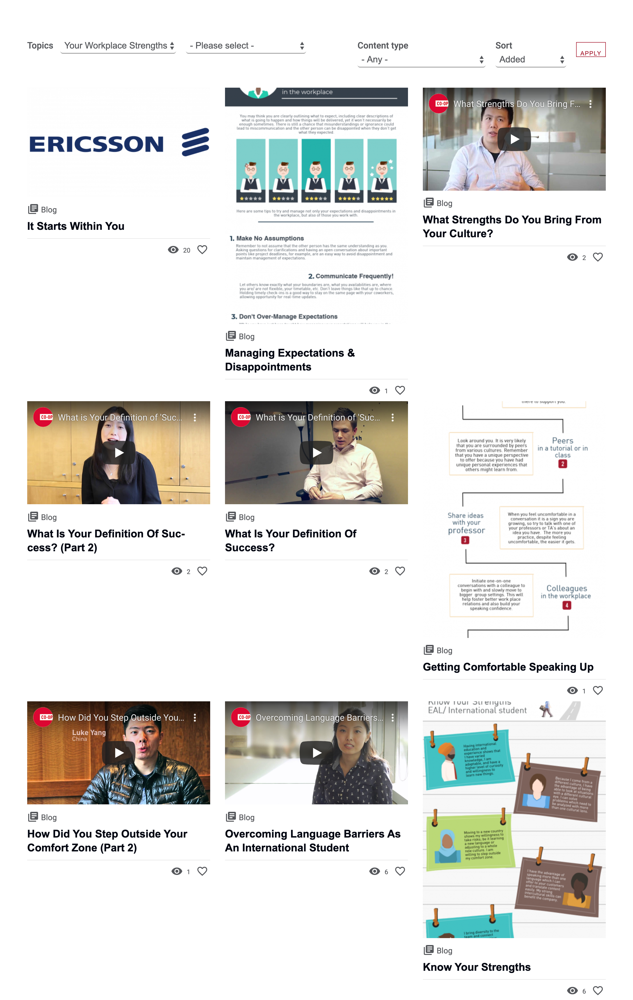

Old SFU OLC website: EAL/ESL website
 New SFU OLC website: EAL/ESL website
New SFU OLC website: EAL/ESL website
Audience
The main audience of the website is current SFU students looking for a co-op, exchange, and school-related material.
Problems
- outdated and cluttered design
- inefficient browsing experience
- lack of website functionalities (Ex: filtering and sorting options)
- new content gets buried under the layers of the old content
Proposed Design Solution
- Dynamic and user-specific content
- trending/top content to keep the users updated on the hottest topics
- featured content to leverage editor-curated quality content
- recently published to show what's new
- tailored content to resonate with the user and create engagement
- Finding content faster
- More intelligent and thoughtful filtering
- Sorting by recency, # of views and etc.
Old SFU OLC website: Featured Section
 New SFU OLC website: Featured Section
New SFU OLC website: Featured Section
Old SFU OLC website: No Filter
New SFU OLC website: Filtering Section
Wireframe
Once proposed design solutions were discussed, I wireframed both the EAL/ESL section and the iBelong section.
Final Wireframe for EAL/ESL
Final Wireframe for iBelong
Challenges
Wireframing skill: This is one of the first projects where I learned to wireframe. I wasn't too familiar with website layouts and navigation as I've never really thought about it before as I go through different websites
Solution: I looked into different websites such as Lonely Planet, retail shop websites, and many more to get inspiration and learn their web developers navigate the users.
Reflection
I first started this project with little knowledge in UX design. However, I was supported by my supervisors who guided me throughout the process. I believe I manage to address the problems of the site succesfully. Although there are still improvements that can be made, I am proud of the work I have done. There is still a lot for me to learn about user experience design and design in general, but this project have made me more expereince in this area.